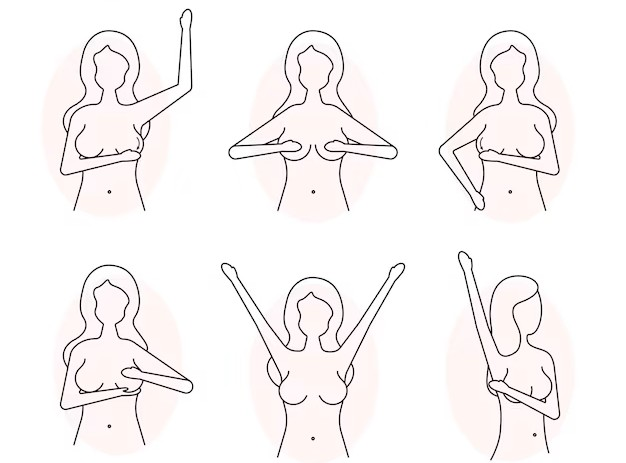
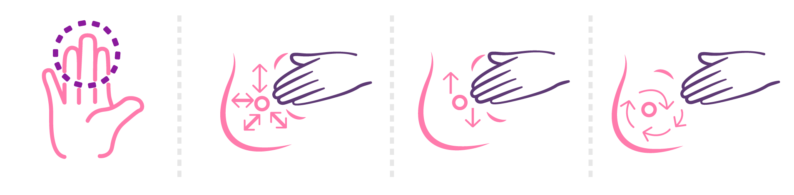
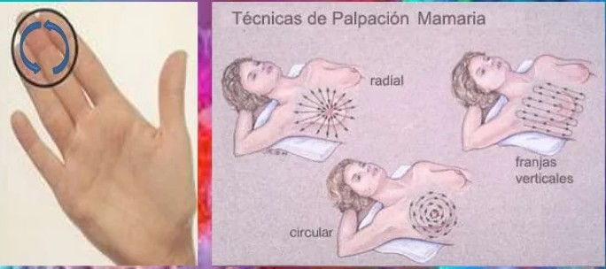
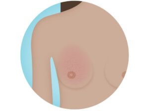

Paso 1: Observación frente al espejo
Colócate frente a un espejo con los brazos relajados a los costados. Observa si hay cambios en la forma, tamaño, piel o pezones. Revisa si hay bultos, hundimientos, enrojecimientos, piel de naranja o secreciones espontáneas. Gira ligeramente el torso hacia ambos lados para detectar cualquier asimetría o anormalidad que no sea evidente al mirar de frente.
Paso 2: Movimiento de brazos para observar cambios
Levanta los brazos lentamente sobre tu cabeza y observa si los senos se elevan de forma simétrica. Mira si hay ondulaciones, cambios en el contorno o zonas que no se muevan como el resto. Esta posición permite ver retracciones o alteraciones que podrían estar ocultas con los brazos abajo.
Paso 3: Palpación de pie o sentada
Con la mano contraria al pecho que vas a explorar, usa las yemas de los tres dedos medios para presionar suavemente en círculos pequeños. Recorre todo el seno con un patrón sistemático: en círculos desde el pezón hacia fuera, en líneas verticales o en forma de reloj. No olvides palpar hasta la axila, ya que allí también hay tejido mamario y ganglios linfáticos importantes.
Paso 4: Palpación acostada
Acuéstate sobre una superficie firme y coloca una almohada o toalla debajo del hombro del lado que vas a examinar. Esto distribuye mejor el tejido y facilita la palpación. Usa la misma técnica de presión en círculos con diferentes niveles de intensidad (suave, media y profunda) para cubrir toda el área del seno y la axila, detectando cualquier bulto o zona endurecida.
Paso 5: Revisión de pezones
Presiona suavemente cada pezón con los dedos índice y pulgar para observar si hay salida de secreción, ya sea clara, blanca, amarilla, marrón o con sangre. También verifica si hay dolor, retracción (cuando el pezón se hunde hacia dentro), enrojecimiento, resequedad o descamación de la piel. Cualquier cambio persistente debe ser evaluado por un profesional de salud.